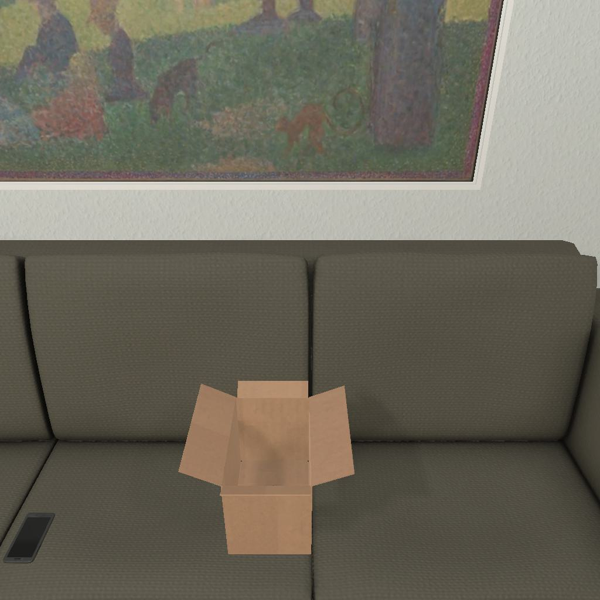

---------------------------------------------------------task: 5---------------------------------------------------------
--------------------------------------------------------------------------------------------------------------------------------------------------------------------
--------------------------------------------------------------------------------------------------------------------------------------------------------------------
Step:--------------------------------------------------------------------------0-------------------------------------------------------------------------------
----------------------------------------
VLM Prompt:
Image1:
**Instruction**
1. Analyze the provided images to identify all visible household objects and compare the difference between images (e.h. whether the object is opened or not and taken on hand or not), focusing on those relevant to the task description "put a book in armchair."
2. Use the analysis of images and the task hint "The agent must find an object of the desired type, pick it up, find the correct location to place it, and put it down there." to answer the question: what is the most reasonable action in the choices for the task description "put a book in armchair"?
3. Decide and write the answer using the template: The answer is: (i): , where i is the real number. If there is no desired object in images, search every place based on **Initial Observation** to find the object. And if no one is exactly correct, choose a similar answer.
**Initial Observation**
You are in the middle of a room. Looking quickly around you, you can see armchair (1), sofa (1), coffeetable (1), drawer (1-4), sidetable (1-3), dresser (1)
**Answer Choices**
(1): go to armchair 1
(2): go to sofa 1
(3): go to coffeetable 1
(4): go to drawer 1
(5): go to sidetable 1
(6): go to dresser 1
(7): go to drawer 2
(8): go to drawer 3
(9): go to drawer 4
(10): go to sidetable 2
(11): go to sidetable 3
**Answer**
Let's think step by step by following the instructions.
----------------------------------------
----------------------------------------
Original Response:
Image Analysis:
- In image1, we see a sofa with a cardboard box placed on one of the cushions and a smartphone lying next to it. Above the sofa, there's a framed painting hanging on the wall.
- There is no book visible in the image, and no armchair is visible either.
- No objects are being taken on hand, and the box on the sofa appears to be empty and opened.
Task Analysis:
- The task is to put a book in an armchair.
- Based on the task hint, the agent must find a book, pick it up, locate an armchair, and place the book there.
Initial Observation:
- The provided locations include one armchair, one sofa, one coffee table, multiple drawers (1-4), several side tables (1-3), and one dresser.
- To complete the task, the agent first needs to locate a book.
Based on the initial observation and the absence of a book in image1, the agent should start by searching locations where a book is likely to be found, such as drawers or a dresser where books are commonly stored.
The answer is: (4): go to drawer 1
----------------------------------------
----------------------------------------
>>> Refine Original VLM Response and Get Pure Action: go to drawer 1
----------------------------------------
-----------------------------------------------------------------
Running time: 18.517741441726685 seconds
Total Money: 1.5542900000000004
-----------------------------------------------------------------
-----------------------------------------------------------------
Text Observation:You arrive at loc 3. The drawer 1 is closed.
-----------------------------------------------------------------
UNSUCCEED